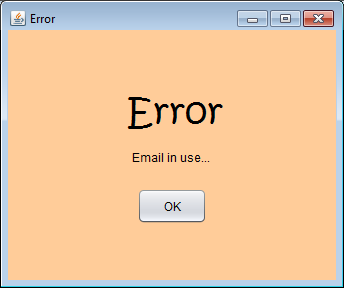

Só um utilizador registado pode fazer login e aceder efetivamente ao jogo. O acesso ao menu de registo só é possível após o estabelecimento da conexão ao servidor. Deve selecionar-se o botão "Registar" da interface inicial:
Aparecerá, então, a seguinte janela onde o utilizador poderá introduzir os seus dados pessoais:

O username e o email deverão ser únicos na base de dados do servidor. Caso os dados introduzidos já existam, será apresentada uma janela a expor o respetivo erro:

Na ausência de erros, a janela de registo fecha-se e regressa-se à interface inicial da aplicação.